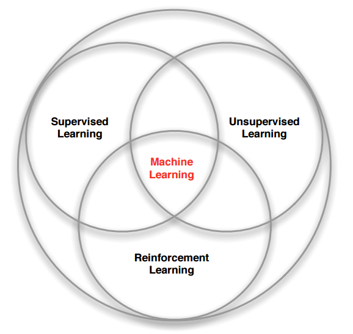

Since the very first computer was created, scientists dreamed of being able to have computers act autonomously. They hoped that with the power of computing they would be able to create Artificial Intelligence and all the world's problems would be solved.
Unfortunately, it wasn't as simple as giving a computer with a lot of processing power a bunch of data. In 1957, when computers were finally available to scientists for the first time, one of the first things they attempted was to get a mainframe, Illiac I, to compose a symphony.
Two scientists, Lejaren Hiller and Leonard Issacson programmed the Illiac I using a mathematical algorithm to compose the world's first symphony written by A.I., "Illiac Suite for String Quartet." It's a little hard to listen to it but it was a very interesting first attempt. I would give definitely give more credit to scientists than to the Illiac I which composed the music procedurally based on rules rather than learning the rules on its own. I would consider CodeParade's "Neural Composer" much closer to what Hiller and Issacson envisioned in the 1950s. CodeParade used recurrent neural networks and principle component analysis to develop a model that leverages modern NLP and Reinforcement Learning techniques to generate video game music. Why does it generate video game music? Because it was trained on video game music!
Machine Learning is a field of Computer Science that allows computers to accomplish tasks without being explicitly programmed for that task. However, that is not to say that the computers don't have to be programmed at all. In fact, there are many different algorithms that have been developed for different use cases. The expectation is that once the algorithm has been implemented by continually iterating over data the computer will be able to make a model that over time will improve performance at its given task.
Machine learning can be split into three different areas:
-
Supervised Learning
In supervised learning, the algorithms might try to predict or classify something and we'll actually have a source of truth that the algorithm will be able to cross reference to be able to validate whether it was right or wrong and make better predictions the next time.
Algorithms:
- Linear Regression
- Polynomial Regression
- Logistic Regression
- Neural Networks (Supervised Style)
-
Unsupervised Learning
Unsupervised Learning is a bit more magical. We might have a set of data with a lot of features but we might not know which features are the most important so we have an unsupervised algorithm analyze the data and provide us with clusters of the data that it thinks are similar. It maybe used a cartesian system where it uses an Euclidean distance to compute how far apart data points are from one another.
Algorithms:
- K-means Clustering
- Principle Component Analysis
- Autoencoders
- Singular Value Decomposition
-
Reinforcement Learning
This one is my favorite. Here we use algorithms that take actions at a state in an environment which produces a positive or negative reward for taking that action and puts them in another state where it can proceed to take another action until either it achieves its objective or fails to do so. Whether it succeeds or fails it try to make decisions that maximize the future sum of discounted rewards. This may be why chess playing models trained in this fashion that can be so aggressively efficient.
Algorithms:
- Q-Learning
- Deep Q-Network
- Deep Determenistic Policy Gradient
- Proximal Policy Optimization